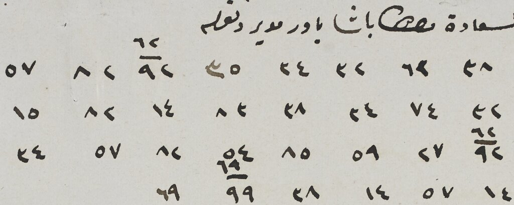
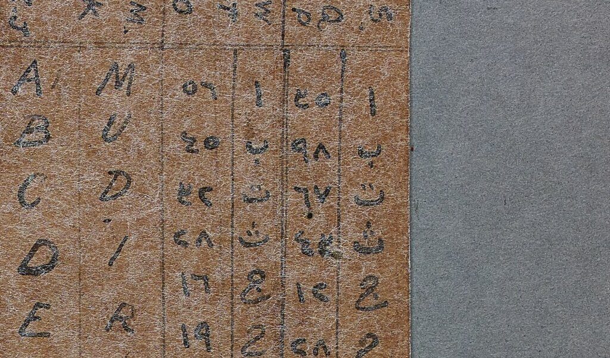

At a glanceNot solved · key not recovered
- The document
- A single leaf in an Arabic hand: an address line (as read here from the image, not checked by an Arabic reader) to Mustafa Pasha, Mudir of Dongola, then 119 two-digit numeral groups, some words in clear Arabic between them, and two closing lines of clear Arabic with four groups in the first. It is attributed to Gordon on the strength of Elwin Palmer’s covering letter of 15 November 1886, which calls it a scrap “containing figures signed by Gordon” found among papers from Dongola; the signature block was not read here.
- Where
- Durham University Library, Sudan Archive, Wingate Papers, SAD.250/1/550 (covering letter SAD.250/1/549); the images are free online. Not on DECODE. Catalogue entry 2939.
- The cipher
- Not established. 26 distinct values, digits 1–9 only, and a digit pattern that points to a table; whether the groups stand for letters or for names and sums is open.
- How it was tried
- The two Arabic columns of the Durham table SAD.250/1/81 were read and tried against the note; a letter-substitution attack with controls and crib dragging on the closing groups were run.
- Why it resists
- No key survives, the text is short, and the note’s order has structure but does not behave like running Arabic prose. Palmer’s letter says a Dongola employee, Khalil Ibrahim, “has the key”.
- Still open
- Everything. The comparison material (the Kitchener telegrams in Arabic script at Kew, the Khalifa’s pouch at Durham) is not digitised.
01 The note
The leaf is in the Wingate Papers at Durham, in the Nile Campaign series (SAD.250/1). It sits next to a letter of 15 November 1886 from Elwin Palmer to Francis Grenfell (SAD.250/1/549), which says that the scrap “containing figures signed by Gordon” was found among papers from Dongola, that Gordon “evidently had a code”, and that a Dongola employee, Khalil Ibrahim, “has the key”. Durham’s catalogue describes it as “a note written in code by Gordon”. The attribution to Gordon rests on that letter and catalogue; the signature block at the foot of the leaf was not read here.

The leaf has an address line, about fifteen rows of six to eight groups, clear Arabic words between groups in five of the rows, and two closing lines of clear Arabic with four groups in the first. The year digits of the date at the foot are not clearly legible (1300 to 1302); the day looks like 16. No decipherment is written on the leaf or filed with it, and DECODE, Tomokiyo’s Cryptiana and Lasry’s lists have nothing on it. Hake’s edition of Gordon’s Khartoum journals prints his plain-Arabic notes to the Mudir of 8 August and 28 September 1884 and says the Mahdi seized a cipher to the Mudir dated 22 September 1884, without printing it. This leaf is probably not that item, since it was found at Dongola.
02 The groups
The groups were transcribed from the images into 119 two-digit values (transcription.txt), right to left, the direction of Arabic writing. This is a best reading, not a checked one: the glyph pairs 3 and 4, and 2 and 6, are easy to confuse, and a second reader should check them before any single value is relied on. Struck cells are entered as their final values.
- Repeats. 26 distinct values in 119 groups; the coincidence index is 0.065 against 0.036 for 28 equally likely symbols. The commonest values are 38 (20 times), 27 (12), 82 (10), 34 (8), 74, 14 and 39 (7 each).
- A digit pattern. The first digit is 1, 2, 3, 5, 6, 7 or 8 in 116 of 119 groups (3 alone in 44), the second is 2, 4, 5, 7, 8 or 9 in 116 of 119, and no zero occurs. 20 of the 26 values (113 of the 119 groups) lie inside the 7 × 6 grid those digits make. That points to a table with row and column labels; the six values outside it (36, 47, 49, 63, 86, 92) are the likeliest misreadings.
- Repeated runs. 27 59 38 34 occurs twice (rows 9 and 15), 27 74 39 three times, 74 27 38 twice, and 38 75 34 at the end of row 10 and again at the start of the closing groups, followed by 14 in one place and 49 in the other.
03 The clear Arabic
The clear words were transcribed from native-resolution crops by the model, not by an Arabic reader, and each line needs a human check (clear_words.md has the full table with confidence marks). What is clear:
- The address: لسعادة مصطفى باشا مدير دنقلة, to His Excellency Mustafa Pasha, Mudir of Dongola.
- Row 5, between two runs of groups: كما سبق التحرير, “as previously written”, which implies an earlier letter or telegram.
- Row 11: كل, “each”.
- Closing lines, with less confidence: about the aforementioned men (المذكورين) who informed us that he did not give them (لم يعطهم), then four groups (38 75 34 49), then a second line about their coming to us, “so we give to each” five(?) pounds(?).
Taken together, the note seems to concern persons and a payment, which suggests the groups may carry names, ranks or sums rather than the letters of running prose. The clear words do not decide between the two.
04 The Durham key table
Leaf 81 of the same unit (SAD.250/1/81) is a pencil table of cipher codes for senior army personnel: Latin letters against two-digit numbers in several columns headed with officers’ names (Wolseley and Kitchener among them), and, on the right, two Arabic-alphabet columns, each a column of letters followed by a column of two-digit numbers (N1 and N2). Both were transcribed at 1.5x from native-resolution crops into table_key.tsv, 27 of the 28 letters, each reading marked high, medium or low confidence; most N1 readings are low.

The note was mapped through each column, as read and with each group’s digits reversed, with and without treating 3 and 4, and 2 and 6, as the same glyph, and the letters that came out were scored against Arabic letter frequencies (a corpus of eight long Arabic Wikipedia articles, ar-wikipedia-sample in lang/). The test asks whether the result looks more like Arabic than a random reassignment of the same letters to the same values does (4000 draws).
- N2 does not read the note. In all four variants random reassignment does as well or better in 65 to 88 percent of draws. The commonest group, 38 (17 percent of the note), is dhal in N2, and alif is 56, which never occurs. N2 does share part of the note’s digit pattern (78 percent of its values lie in the note’s grid, against 52 percent by chance and 95 percent for the note), so it may be a keying of the same family.
- N1 does not either, with one marginal hint. As read, 41 percent of the note’s groups map and 2.5 percent of random reassignments score as well; that is one of eight variants (about 0.2 after correcting for them), it disappears when 3=4 and 2=6 are allowed (18 percent), and it rests on low-confidence readings. The note’s next commonest values, 27, 82 and 34, are not in N1.
The table, as read, does not decipher the note. The note is probably another keying of the same kind of system, perhaps the one Palmer says Khalil Ibrahim held, which the table does not record.
05 The crib attack
The note’s group frequencies, sorted, track Arabic letter frequencies closely (correlation 0.995), but any skewed profile correlates that well, so this proves little. Three tests were run on the order of the groups (crib_attack.py, crib_drag.py):
- Repeats against controls. Against 3000 shuffles of the note, the repeated bigrams (31 against 22) and repeated trigrams (7 against 1.7) are 3.2 and 4.0 standard deviations high, so the order is not random. Against 3000 real 119-letter slices of Arabic it is ordinary on repeats, but its commonest bigram occurs 4 times where real Arabic gives about 9, and it uses 26 distinct symbols against 22 on average (transcription errors would add symbols).
- A letter-substitution attack. Annealing the 26 symbols to Arabic letters under a letter trigram model scores −311 for the note, against −334 to −317 for shuffled copies of it and −308 to −253 for held-out Arabic enciphered with random keys: better than every shuffle, worse than every real control. The decode is not Arabic, and splicing the clear words in as known plaintext does not change that.
- Crib dragging. The four groups after “did not give them” (38 75 34 49) were forced onto each of 156 common four-letter Arabic words, and the rest re-optimised, against 156 random four-letter strings. 12 real cribs beat the random 95th percentile where about 8 are expected by chance, and none leaves readable text.
So the note’s order has real structure, yet it does not behave like a letter-for-letter substitution of Arabic prose: no dominant article bigram, an inflated symbol count, and an attack that cannot rise above the middle of the range between shuffled and real text. A code or mixed system, with the repeated runs as repeated words, fits better than a plain substitution, but nothing here confirms it.
06 What is left
The digitised units of the Nile Campaign series covering 1884–87 (SAD.250/1/1–133 and 528–606, 278 leaves) were looked through leaf by leaf: leaf 550 is the only leaf of numeral groups, and the earlier letter the note cites was not found. What could hold comparison material is not online:
- TNA PRO 30/57/4/75–109, Kitchener’s telegrams in Arabic script, including 4/77–78 of 24–25 August 1884, “please use Arabic cipher” (Kew).
- Durham SAD.101/15, a pouch of fragments with Arabic words and numerals found on the Khalifa in 1899; the Hicks Pasha registers (SAD.866, SAD.600); the 1916 Arab Bureau files with coded Arabic messages (SAD.138/10, SAD.141/3).
- The four “Arabic cipher letters” that Gordon sent by Kitchener’s messenger in November 1884 (Hansard, 14 November 1884), and any decode of this note.
Also needed: a human Arabic reader to check the clear words and the groups (the attack can be rerun in about two minutes with corrected readings), and a better image of SAD.250/1/81, since the grey pencil limits the table readings. The work stops here for now; the open leads are physical sources.
07 Sources
- Durham University Library, Archives and Special Collections, Sudan Archive, Wingate Papers: SAD.250/1/549–550 (the note and Palmer’s covering letter; images), SAD.250/1/81 (the table; images); finding aid. The images carry a CC BY-NC-ND 4.0 licence (stated in Durham’s IIIF manifest).
- A. E. Hake (ed.), The Journals of Major-Gen. C. G. Gordon, C.B., at Kartoum (1885), Appendix U (Gordon’s notes to the Mudir of Dongola; the seized cipher of 22 September 1884).
- The National Archives, PRO 30/57/4 (Kitchener papers), item-level catalogue; Hansard, 14 November 1884.
- Arabic letter frequencies: eight Arabic Wikipedia articles (
lang/sources.json,ar-wikipedia-sample).
Everything is in targets/gordonmudir1884/ in the project repository: transcription.txt, table_key.tsv, clear_words.md, analysis.py, crib_attack.py, crib_drag.py and survey_durham.py. This page is catalogue entry 2939.